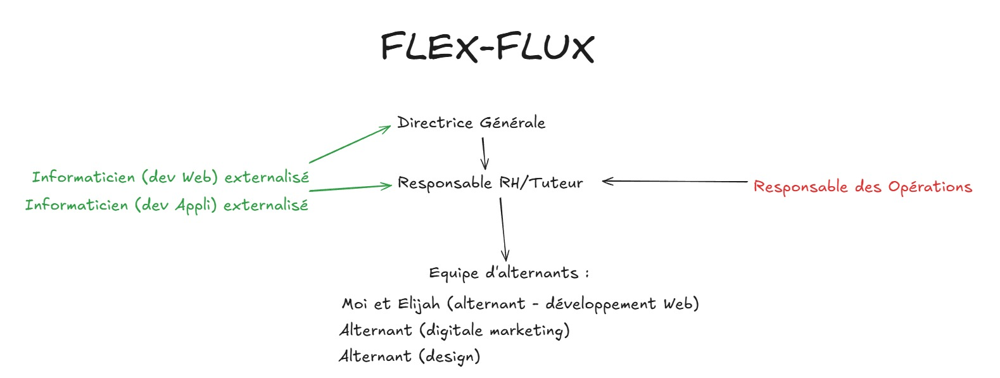

Découvrez l'entreprise qui m'a accompagné durant ma formation BTS SIO
Flex-Flux est une entreprise spécialisée dans les solutions innovantes pour la gestion et l'optimisation des activités de production et d’exploitation dans le secteur des transports. Grâce à une expertise technique et humaine, elle répond aux besoins opérationnels des transporteurs en offrant flexibilité, technologies performantes et compétences complémentaires.
Participer à la conception et au développement d’outils logiciels.
Collaborer avec les chefs de projet pour le déploiement de nouvelles solutions.
Participer à l’automatisation de processus opérationnels (affectations, suivi des incidents).
En tant qu’alternant au sein de Flex-Flux, j’ai eu l’opportunité de jouer un rôle actif dans le développemen t et l’optimisation des outils logiciels dédiés à la gestion de la production et de l’exploitation.
